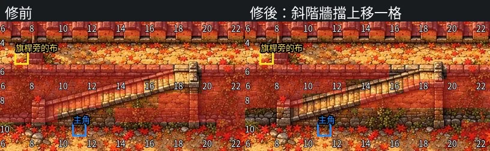

試玩與回饋
《續》的試玩分兩層：一層是人真的坐下來玩，覺得哪裡不對就留一句；另一層是程式替人先走一遍，把走不到、對不上、數值不合理的地方找出來。2026-10-23、24 這一輪，兩層都用上了。回饋怎麼變成修改，前面一個人跟 AI 怎麼做完一部 RPG已經寫過 10-20 以前的流程；這一章接最近這一輪，記工具、指令、實際抓到的問題，還有模擬器仍然看不到的地方。
按 F，寫一句
本機預覽用 larch-preview。玩到不對的地方按 F，出現回饋欄，寫一句，存下來。預覽會自動附一張截圖，寫進 dist-city/new/feedback/feedback.jsonl，圖放在同一個資料夾。
RPG 地圖上的回饋，除了一句話，還會記下地圖、主角座標、方向、當時的劇情變數與最近幾個變動。對話框裡是哪一句，檔案沒有這個欄位。xu/README.md 寫得很清楚：「台詞本身抓不到。」所以回饋要自己寫清楚是在哪一句、哪個畫面，AI 才有辦法對回程式。
到 10-24，dist-city/new/feedback/feedback.jsonl 有 125 則，狀態都還是 open。讀回饋用 larch-preview 附的 lp.feedback list；處理完用 lp.feedback done，寫上改了什麼。狀態沒有逐筆關閉，不代表沒有修，只代表回饋檔沒有跟著更新。
一則回饋怎麼變成修正
10-23 深夜那一則是斜階的牆擋。回饋原文：
這排樓梯的牆擋 應該整個向上平移1格,能走範圍才會跟圖比較對得起來
地圖是 m-z4，座標 (17,7)。原因是 art/wuyuan/plan.yaml 的階梯格讓可站的位置壓在畫上斜階的南側牆面。修正新增 art/wuyuan/walk_review.json，把斜階所在的北牆帶由 y=6～9 移到 y=5～8，與城頭走道重合的 y=5 保持可走。同一張完整時期原畫也用在 m-z7，兩張一起修。人、旗杆、原畫都沒有搬動。
驗證從 m-z4 起點 (11,10) 走上斜階，走到旗杆旁的布；全專案 478 條任務提示，走不到的目標 0 條。

另一則是 23:36 的大孩子換圖。回饋說「本來好像是對的，現在錯了」。原因是建置後段的換圖把九歲的 kid9 與三個大孩子當成同一組，避免撞臉時又換回 kid9。修正讓大孩子先保留三款圖，並把 kid9 排除在大孩子可換的圖之外。全專案掃描後，m-z1 與 m-z6 共六個大孩子都用 bigkid，三人不重複，沒有大孩子用到 kid9。
兩則都有地圖、座標、變數與截圖，可以對回程式。回饋寫得越靠近畫面，修正越不容易找錯地方。
走路模擬器
邏輯模擬器 tools/sim/run.mjs 讀建置好的 project.json，照 rpg-engine 的事件語意重做一遍：事件頁、once、auto、condition、選項、跳圖、變數。不開瀏覽器，整部這次跑大約一秒。它回答的是「事件接不接得下去」，回答不了「走不走得到」。
cd xu/game
node tools/sim/run.mjs --project dist-city/new/project.json --pick first --until-line 全書終
--pick 有三種選法：first 永遠選第一個選項，last 永遠選最後一個，rot 依序選第 1、2、3 個再回頭。--pick all 一次跑這三種。2026-10-24 推送用的建置，三種都讀到「全書終」：first 2,035 句、last 2,259 句、rot 2,180 句，結局分別是喝、不喝、喝。
逐格走路模擬器 walk.mjs 補上這一層。它直接呼叫本機預覽器附的 rpg-core，用同一套碰撞、事件範圍與 BFS，玩家一次走一格，途中踩到觸發就照引擎順序演，卡住時停下來，列出地圖、座標、階段與原因。
node tools/sim/walk.mjs --project dist-city/new/project.json --pick all --no-pockets
同一份推送用建置，三種選法都停在第二章 B1 的 (62,53)，階段 c2_tocamp，原因是 navigation-cycle。步數會隨建置變動；這次重跑是 1,274 步，先前報告的建置不同，是 1,295 步，卡點相同。任務按鈕的對照走法，first 與 rot 到得了結局，last 停在第五章 A2 的 (5,32)。
第二章的往返追下去，是 B1 的東側邊界把玩家送到 B2，B2 的任務指向北邊出口，格子最短路先往左踩到西側回程出口，回到 B1，再重來。修正把 B2 這一步的導引改成 edge-n-40，玩家沿內部通道進 A2，再正常踩 b2-south，沒有新增跳圖捷徑。第五章任務按鈕的巡兵迴圈、第六章押隊的三個封閉口袋與夜逃火光迴圈也一起修了。
修正版放在獨立建置 dist-city/stuck2tmp 驗，三種選法都走到結局：
| 選法 | 邏輯模擬器，推送用建置 | 逐格走路，推送用建置 | 逐格走路，修正版 | 任務按鈕，修正版 |
|---|---|---|---|---|
first |
2,035 句，喝 | 停在 B1 (62,53) |
7,984 步，喝 | 8,186 步 |
last |
2,259 句，不喝 | 停在 B1 (62,53) |
12,699 步，不喝 | 13,036 步 |
rot |
2,180 句，喝 | 停在 B1 (62,53) |
12,283 步，喝 | 12,605 步 |
stuck2tmp 驗完已刪除；修正寫在場景對照與回歸測試裡，推送用建置還沒有重跑，也還沒有重新推上 Larch。線上那 921 張卡仍是舊的走路版本。邏輯模擬器三種都到結局，不代表走得到；這次就是邏輯過關、走路卡在同一格。
走路模擬器仍然代替不了人。它不重演原生隨機 NPC 的走動與實際等候時間，不跑對話框、選單、計時動畫、音訊與素材載入；戰鬥一律假定勝利，動作戰鬥只走到相鄰格假定攻擊成功。畫面中的位置有沒有對齊原畫，也不在它的判定範圍。
靜態檢查與關係檢查
check_static.py 讀建置好的 JSON，對劇本、事件、卡片 id、素材、引擎上限、成就與結局。指令要指定建置：
XU_DIST=dist-city/new XU_NEW=1 python3 tests/check_static.py
建置與檢查要用同一份稿。別條線在改劇本時，建置加 XU_SCRIPT_PIN=dirty，檢查也要用同一個值。只給其中一邊加，會拿新稿對舊建置，跑出一批對不上的台詞。10-23 的驗收報告記 0 FAIL。這支不開瀏覽器，畫面的事抓不到。
10-24 拿推送用建置重跑，出現 18 條 FAIL：7 條是劇本有台詞、建置沒用到；11 條是建置有句子、劇本沒有。全部在第九章尾段。原因是建置是 04:56 寫的，xu/劇本_第九章_那碗水.md 與 src/ch9_maps.py 在 09:02、09:08 又改過。下一輪要讓建置與檢查用同一份稿，再重跑。
check_rel.py 管關係點數。它建一次專案，列舉互斥選法的每一種組合，算每個人最差與最佳會拿到幾點，再對上限、設計目標、階數門檻與升階小場。2026-10-24 推送用建置的結果：
| 人 | 最差 | 最佳 | 上限 | 設計目標 |
|---|---|---|---|---|
| 布 | 160 | 163 | 123 | 125 |
| 湘 | 121 | 123 | 93 | 90 |
| 荃 | 85 | 88 | 65 | 65 |
| 娘 | 12 | 12 | 9 | 6 |
| 蟬 | 31 | 35 | 23 | 15 |
| 成素 | 19 | 20 | 14 | 7 |
上限是最高階的門檻，設計目標是設計文件第十節的建議。布的上限 123 比目標 125 少 2 點，檢查會提醒供給少 2 點、要補事件；其他五位的上限都到得了目標。掛點 1,354 處、213 種，沒有證據 0 處。
檢查器本身也要有負控制。--neg 把蟬的掛點全部拿掉，檢查必須抓到蟬的缺口與沒掛上的列；抓不到就代表檢查壞了，不能說遊戲沒問題。
兩個模型疊圖看劇本
模擬器看邏輯，看不見畫面。qa_capture.mjs 用瀏覽器照任務框玩，每出現一句新台詞或新選項就截一張圖；序到第一章約 15 分鐘、500 張。qa_judge.py 把截圖、劇本那一節、模擬器預期的句子與程式量到的事實配成題，問兩個不同家族的看圖模型。兩個都報同一類才算確定，只有一個報算待看。
它抓的是畫面與劇本疊不起來：旁白說布坐在木樁上，畫面沒有布；選心聲時 CG 不見；人站在牆上。這類問題邏輯模擬器與靜態檢查都不會報。
模擬器看不到的
走路模擬器補了碰撞與途中觸發，還是沒有補完真人玩的那一層：
- 對話框、選單、名牌遮擋、字卡與 CG 的實際外觀。
- 計時、動畫、rAF，以及需要等巡兵轉向的重試。
- 戰鬥輸贏與動作戰鬥的按鍵過程，模擬器一律假定勝利。
- 音訊、素材載入、存檔視窗、換造型後的畫面。
- 原生隨機 NPC 的走動與我當時的人物位置。
所以最後還是要人開瀏覽器玩。10-24 的線上預覽這次只驗到按開始遊戲與第一幕，沒有從頭玩到結局；推送用建置的走路也還卡在第二章。下一輪先把修正版重新建置、推上去，再從頭走一次。